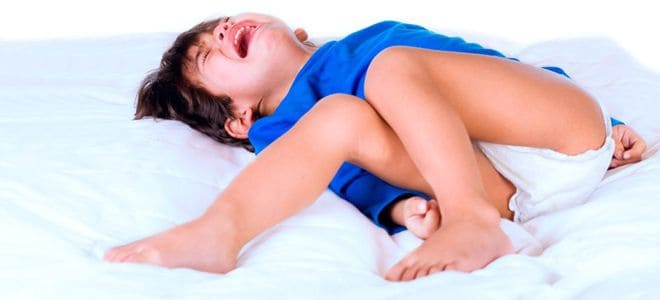
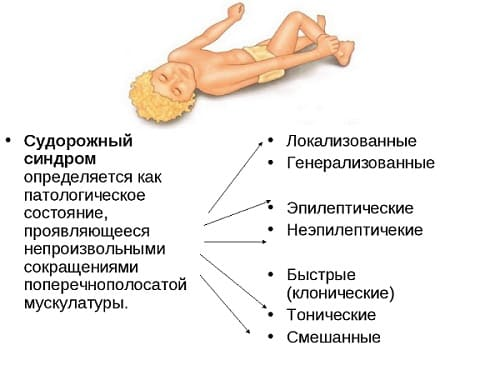
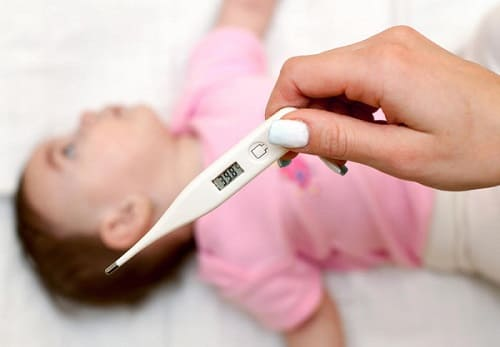
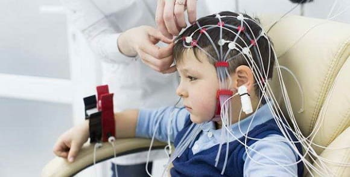

Пароксизмы или судороги — одна из самых пугающих ситуаций, в которой может оказаться родитель. К счастью, большинство случаев пароксизмов длятся только несколько минут, и после этого ребенок чувствует себя хорошо. Когда все успокоилось, начинается определение причины. Вот наш путеводитель, который поможет понимать пароксизмы и то, как ваш врач и невролог помогут вам пройти через это. Если у вашего ребенка в первый раз случились судороги, вам следует отложить эту книгу и вызвать «Скорую помощь». В большинстве случаев неотложного лечения не требуется, но при первом эпизоде лучше перестраховаться.
ПРИЗНАКИ
Некоторые случаи судорог очевидны: ритмичное подергивание рук и ног, одеревенелость всего тела, глаза дергаются из стороны в сторону. Вот какая картина появляется в голове у человека, когда он слышит слово «судороги». Тем не менее большинство приступов судорог у младенцев и детей выглядят иначе. Будучи педиатрами, в своей работе мы сталкиваемся с более тонкими случаями и тратим много времени, выясняя, было ли то, что видели родители, судорогами. Чтобы понять, был ли приступ у вашего ребенка судорожным, важно знать, какие типы подергиваний и движений не являются судорогами.
Нормальные подергивания в детском возрасте. Ниже описаны несколько ситуаций, по поводу которых вам не стоит беспокоиться.
Признаки возможного пароксизма. Вот некоторые признаки, указывающие на то, что движения вашего ребенка могут быть связаны с пароксизмом.
Если у вашего ребенка появляются любые подозрительные движения и они происходят настолько предсказуемо, что вы можете заснять их на камеру, сделайте это. Это действительно поможет врачу. |

ПРИЧИНЫ
Первое, что хотят знать родители: почему у их ребенка случился приступ судорог и случится ли это снова. Хотя некоторые причины известны и врач обязательно проведет анализы для их выявления, в большинстве случаев результаты будут нормальными и не дадут ответа. Вот возможные причины:
ЧТО МОЖЕТ СДЕЛАТЬ ВАШ ВРАЧ (ИЛИ ВРАЧ «СКОРОЙ ПОМОЩИ»)
Самое главное, что надо сделать (помимо принятия лекарства для остановки судорог, если они все еще наблюдаются), — исключить любые неотложные причины, которые требуют немедленного вмешательства. Вот какой схемы может придерживаться врач:
Фебрильные судороги. Если у вашего ребенка лихорадка (или была в тот день), врачи, возможно, применят менее серьезное лечение, потому что в этом случае не стоит слишком беспокоиться. Они убедятся в том, что у вашего ребенка нет никакой серьезной инфекции, которая требует лечения.

Недавняя история болезни. Врач расспросит вас о нескольких прошлых днях, чтобы проверить, не было ли ка кого-то подозрительного события, которое могло бы спровоцировать судороги.
Медицинское обследование. Важно провести тщательное обследование для исключения каких-либо признаков инфекции, недавней травмы или неврологических проблем.
Анализ крови. Врач может сделать анализ крови, чтобы исключить наличие легкопоправимых нарушений баланса электролитов.
Если причина не обнаружена, а результаты всех анализов в порядке, большинство врачей применят выжидательный подход. У многих детей, у которых однажды были судороги, они никогда больше не повторятся. В медицине существует поговорка: «Первый приступ судорог ничего не значит», то есть не требуется никакого немедленного лечения, кроме поиска непосредственных причин.
ПОВТОРЯЮЩИЕСЯ СУДОРОГИ
У небольшого процента детей судороги могут повториться через день, неделю или месяц. В этом случае необходимо дальнейшее обследование. Вот что, возможно, сделает ваш врач:
Электроэнцефалограмма (ЭЭГ). С помощью ЭЭГ изучают электрическую активность головного мозга в поисках любых участков малой или продолжительной судорожной активности. К голове ребенка прикрепляются бесчисленные электроды, и вы сидите с ним в ЭЭГ кабинете примерно час. На это исследование вас может направить педиатр или семейный врач, пока вы ожидаете приема у кабинета невролога (в большинстве больниц на ЭЭГ можно попасть раньше, чем на визит к неврологу).
Консультация невролога. Как правило, невролог проведет дальнейшее обследование и решит, какие анализы или лечение нужно назначить, если вообще есть такая необходимость. Дальнейшие возможные исследования включают МРТ мозга, самый полный анализ крови и более детальную 24-часовую ЭЭГ.

Противосудорожные препараты. Если не была обнаружена причина судорог, которая требует лечения (как и происходит в большинстве случаев), вашему ребенку, возможно, будет назначен противосудорожный препарат, особенно если у него было два или более установленных приступов судорог и ЭЭГ показывает судорожную активность в головном мозге.
ПЕРЕРАСТАНИЕ СУДОРОГ К счастью, у многих детей с возрастом приступы судорог прекращаются и необходимость применения медикаментов отпадает. Если на протяжении примерно 1— 2 лет у ребенка не наблюдается судорог на фоне приема лекарства, как правило, невролог позволит вам прекратить лечение и понаблюдать, не возвратятся ли приступы. В большинстве случаев они не вернутся. |
Здоровье ребенка от докторов Сирс / Сирс У. и др.